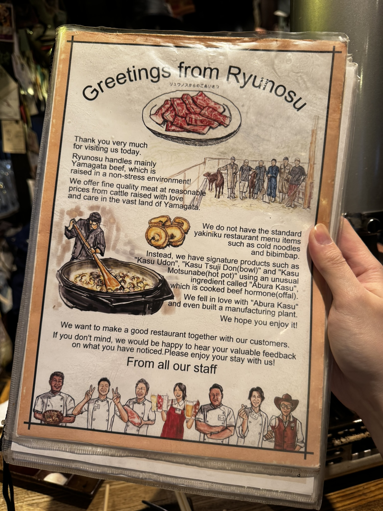
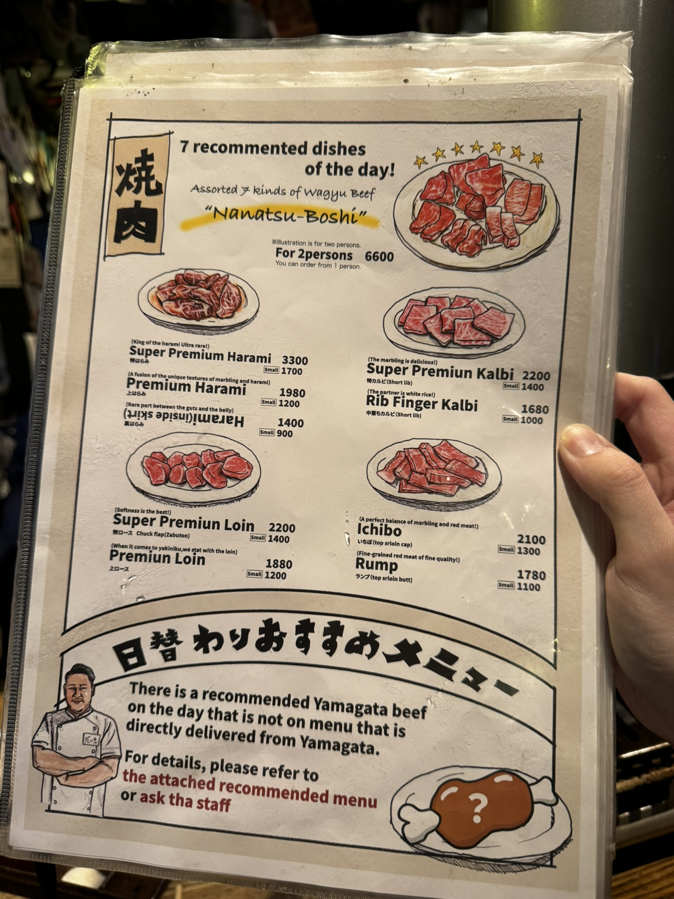
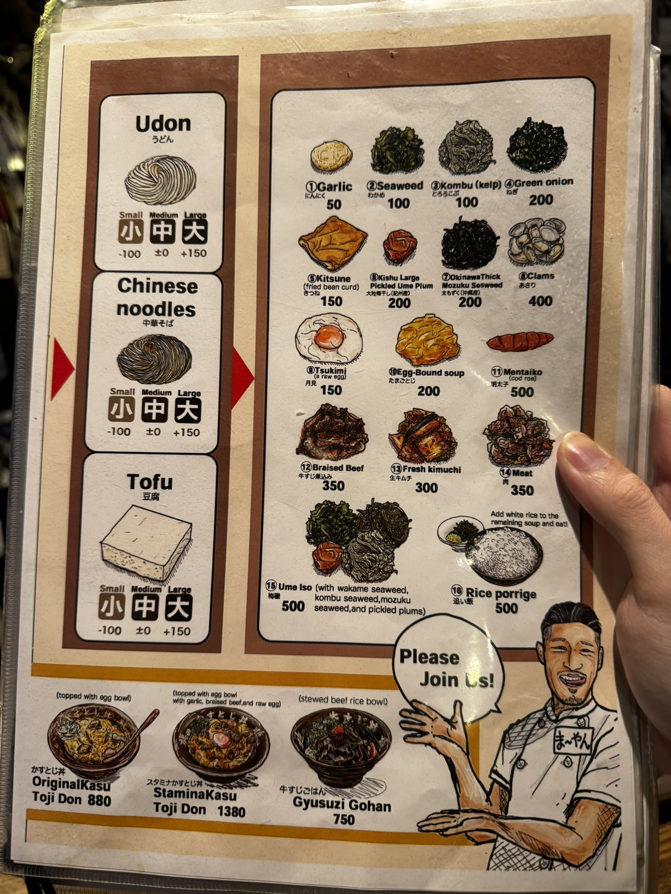

Osaka / 22 Jan 2025 / Late Lunch
Legit meat and a generous bowl of udon.
After flying from Sapporo to Osaka, we had a late lunch at Ryunosu near the Shinsaibashi area. It was a strong first meal in Osaka: warm, satisfying, and very easy to remember.
Personal Review
Ryunosu made the Osaka chapter start well
The meat was legitly good and delicious, with the kind of marbling that makes the meal feel instantly worth it. It was the highlight of the lunch for me.
The udon came in a large portion and had a nice taste, so it worked well as a comforting bowl after the flight. Together, the beef and udon made the meal feel generous without being complicated.
Worth it? Yes. A very satisfying late lunch near Shinsaibashi.
Back to Osaka trip note



